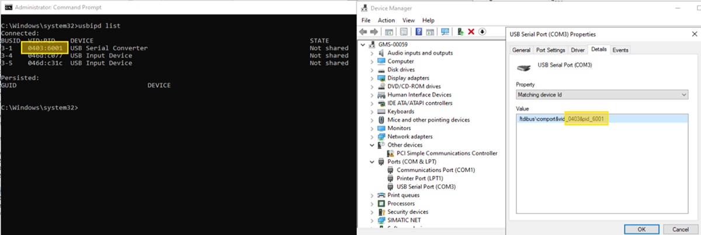
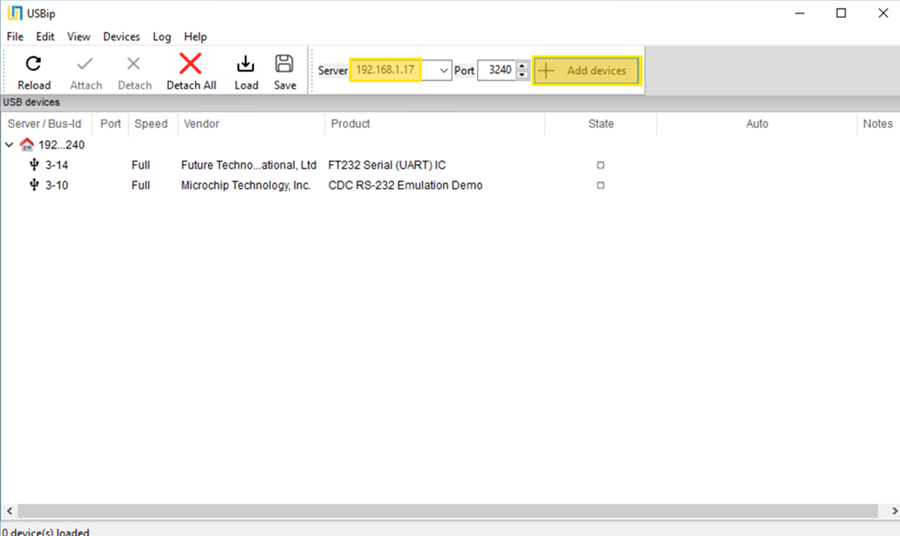
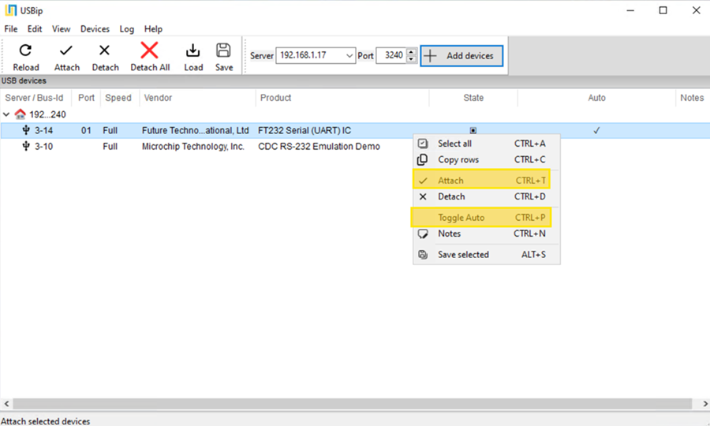
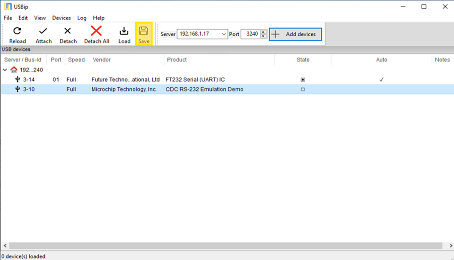

Redirect USB Devices
This final procedure describes how to redirect physical USB devices from the host computer to the virtual machine. This is a crucial step for using specific hardware, within the virtualized environment.
Configuration on the Host Machine
- On the host machine, install the usbipd-win software by running the usbipd-win_x.x.x_x64.msi file.
- Open a Command Prompt with Administrator privileges.
- To list all locally connected USB devices, type the command
usbipd listand press Enter. - Take note of the BUSID for each device you want to redirect (e.g., 3-1, 4-2).

- For each device to be redirected, share it (bind it) over the network using its BUSID. Type the command
usbipd bind --busid=<BUSID>, replacing <BUSID> with the value you noted, and press Enter. Example:usbipd bind --busid=3-1. - Repeat the previous step for all necessary devices.
Configuration on the Virtual Machine (VM)
- On the virtual machine, install the USBip client by running the USBip-x.x.x.x-x64-release.exe file.
- After the installation is complete, launch the usbip application.
- In the main window, enter the IP address of the host machine.

- Select the Fetch remote hosts's list button (or similar) to retrieve the list of shared devices.
NOTE: The list will show the devices made available in Phase 1, such as the SNC Card and the Comark Card. - From the list of remote devices, perform the following actions for each device you want to connect:
- Right-click on the device and select Attach to connect it to the VM.
- To ensure the device reconnects automatically after a reboot, right-click the same device again and select Toggle Auto-attach. An icon or checkmark will indicate that the feature is active.
